Carreira
Planejamento de cada etapa, da base ao profissional, para decisões mais seguras.
Agenciamento, intermediação e representação de atletas de futebol, da base ao profissional, com um olhar atento para cada etapa da carreira.
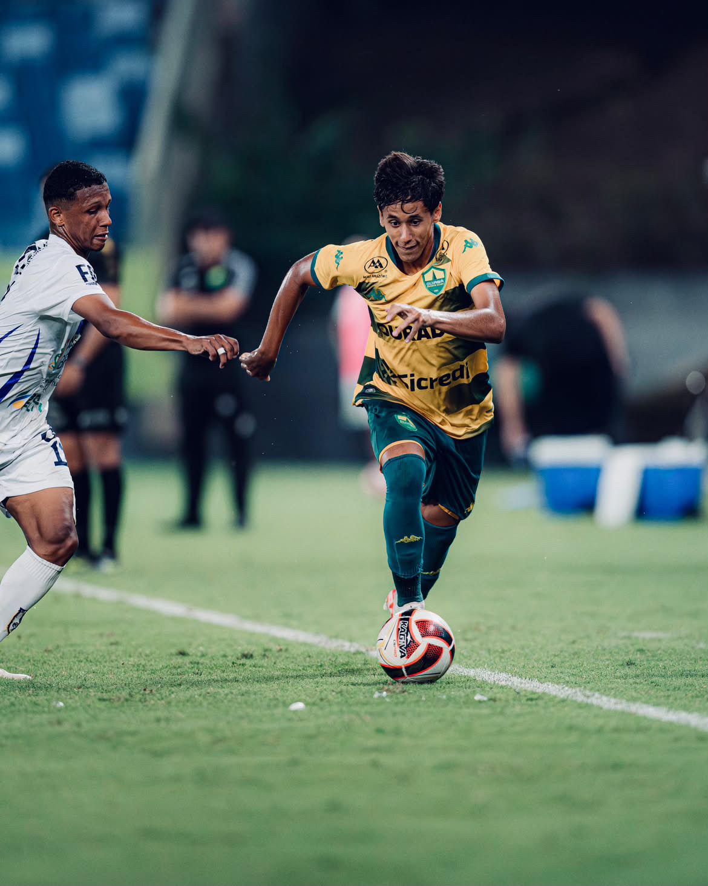
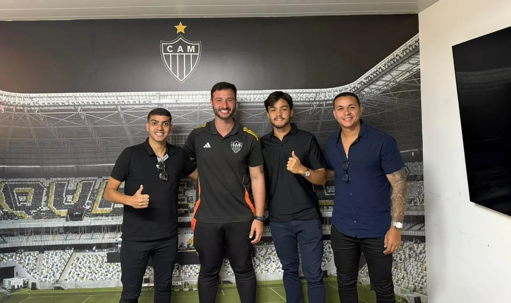
A GSA Sports é uma assessoria esportiva que atua no desenvolvimento de atletas de futebol, conectando potencial a oportunidades reais no mercado nacional e internacional.
O trabalho envolve planejamento de carreira, suporte estratégico e relacionamento com clubes e parceiros, sempre perto do atleta e da família, para que cada decisão seja tomada com calma e informação.
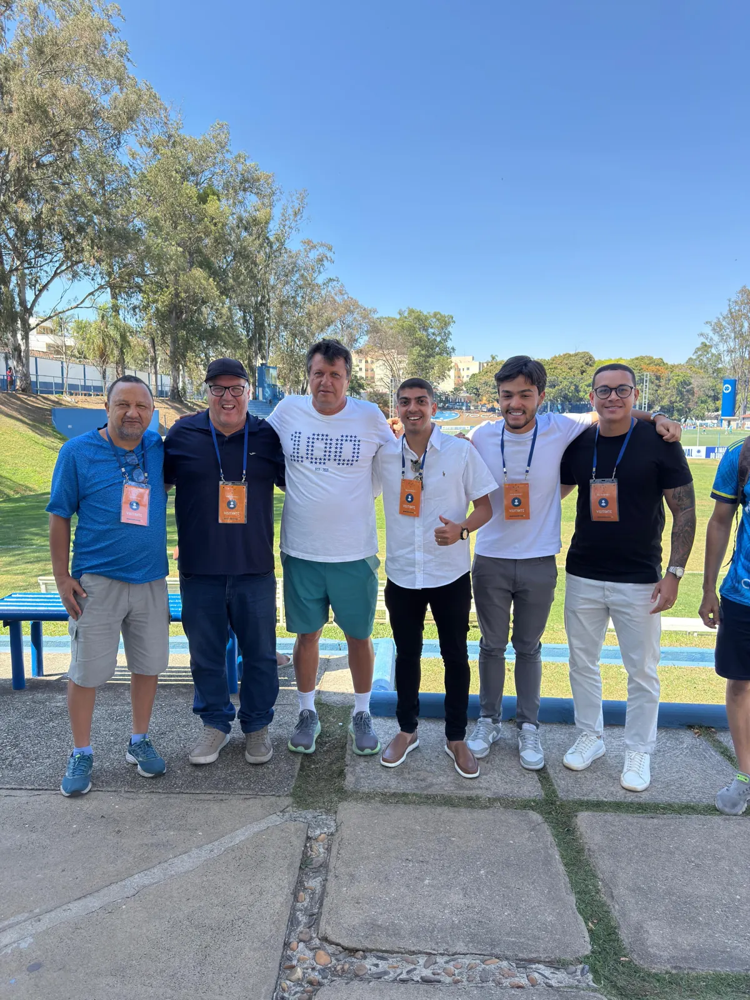
Três frentes que caminham juntas na vida de cada atleta da GSA.
Planejamento de cada etapa, da base ao profissional, para decisões mais seguras.
Relacionamento próximo com clubes, agentes e parceiros do futebol.
Posicionamento do atleta para as oportunidades certas, no momento certo.
Visitas a clubes, jogos e a rotina dos atletas que a GSA acompanha.
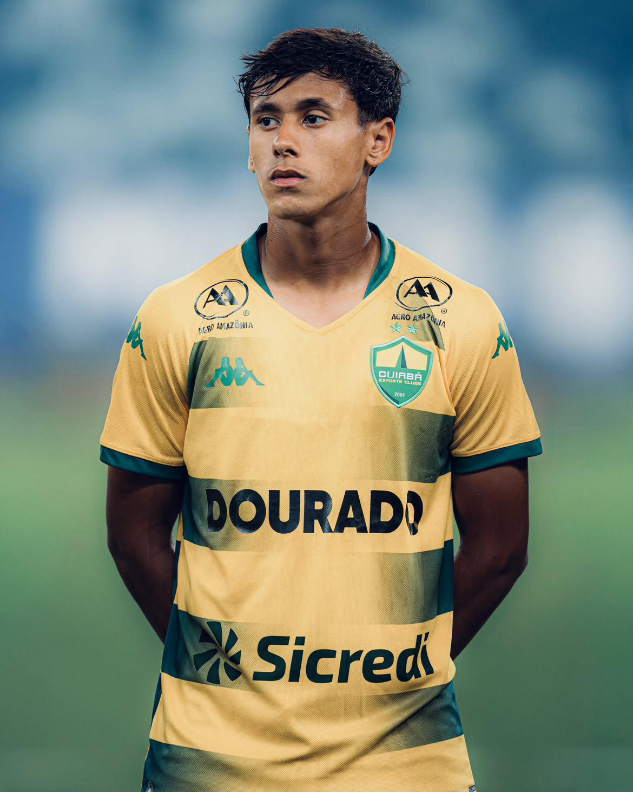
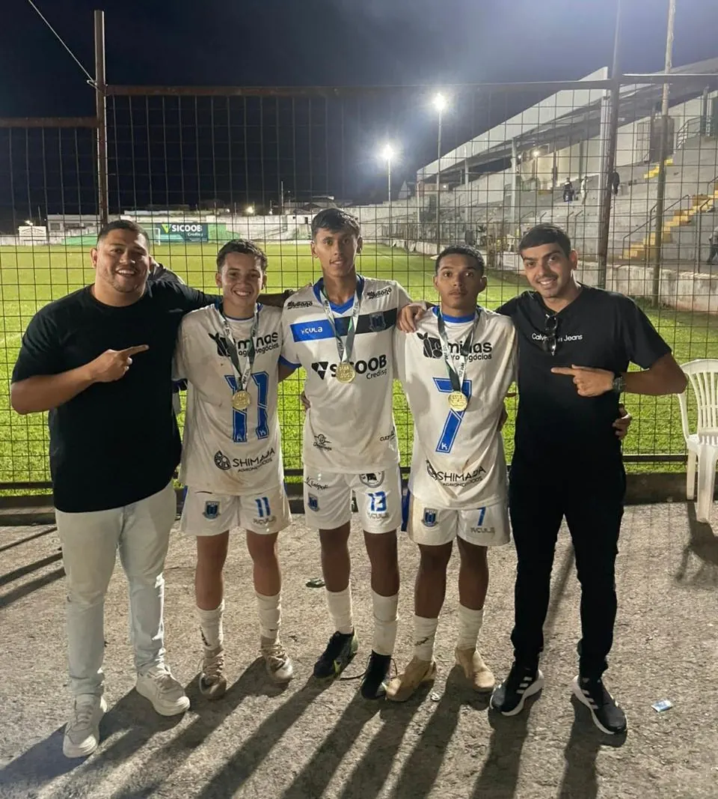
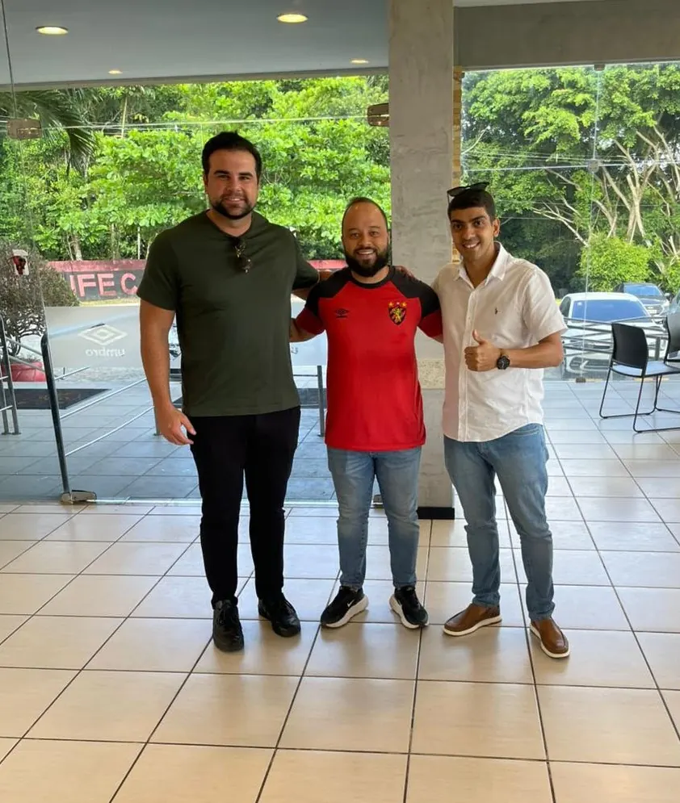
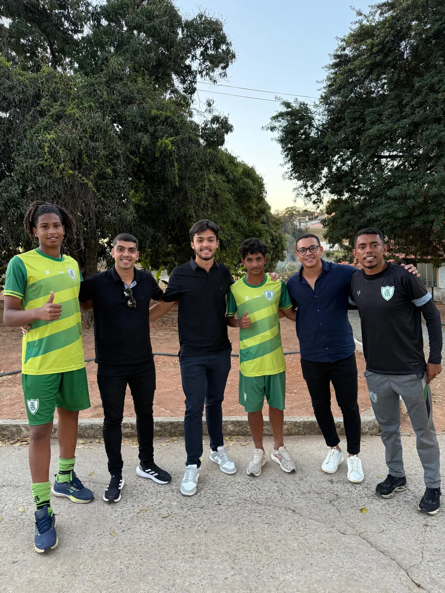
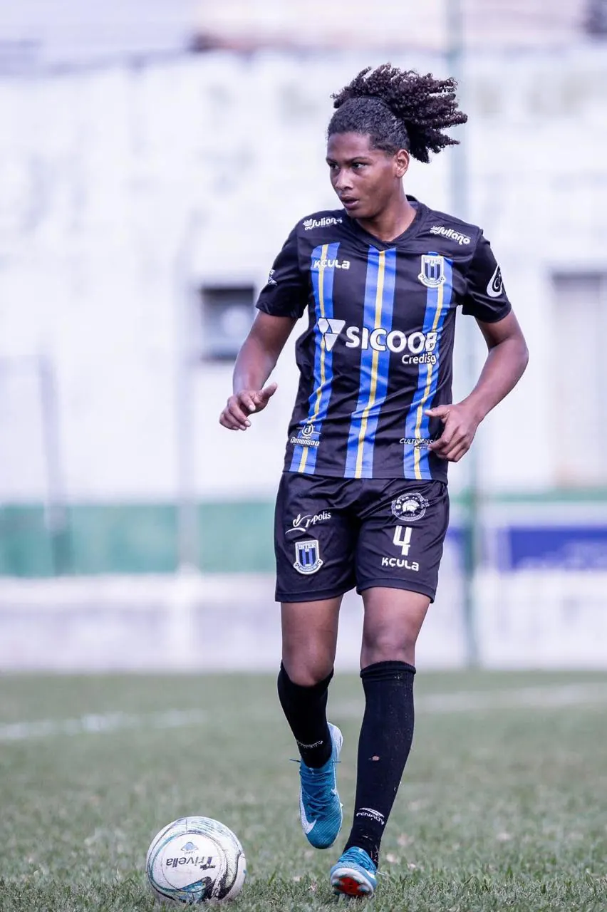
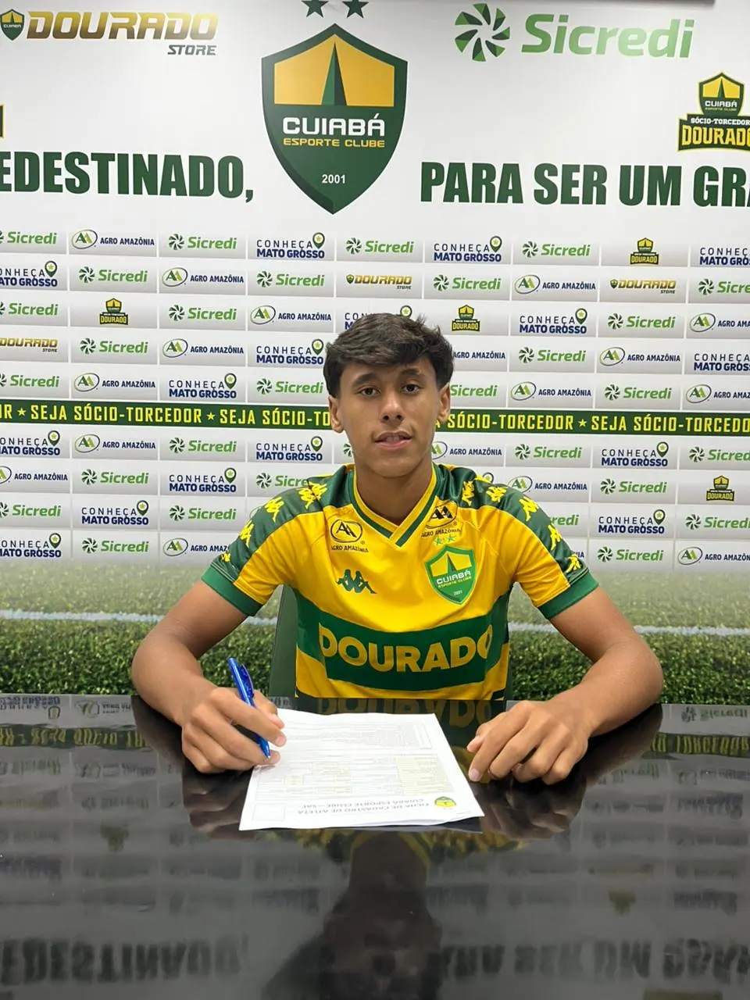
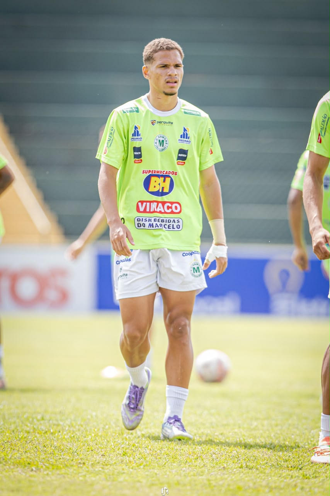
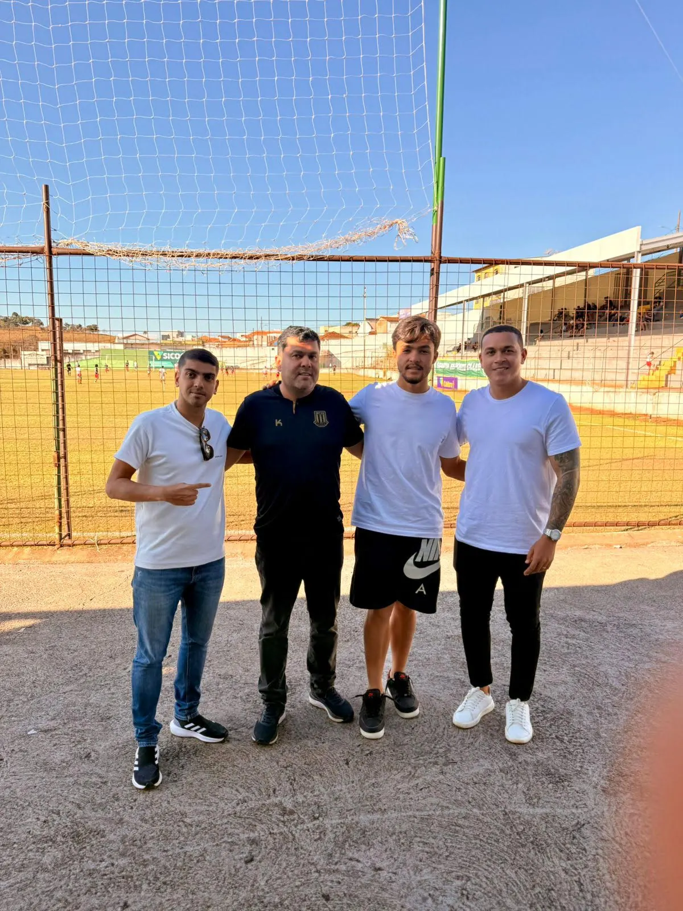
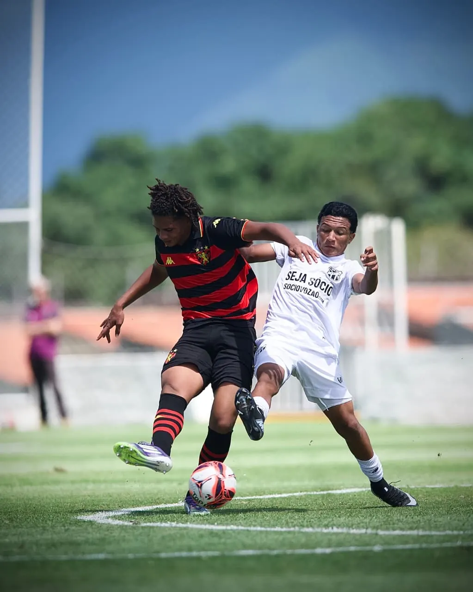
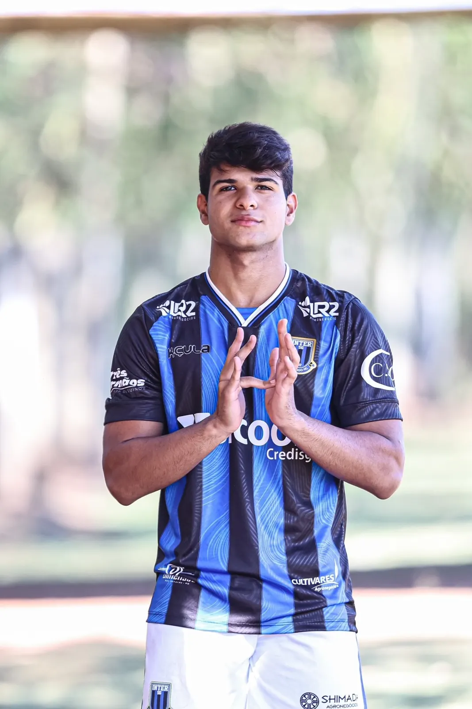
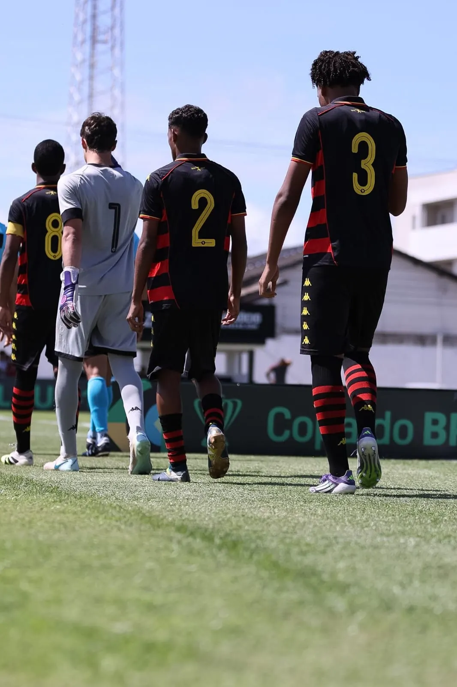
Jogos, visitas a clubes e a rotina dos nossos atletas. É por lá que a gente compartilha o trabalho e também onde você fala com a GSA.
Seguir @gsasportss